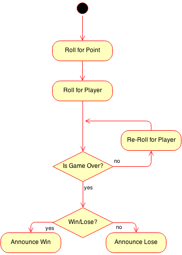

Random Numbers Programs
GuessingGame
Create a class named GuessingGame, with one method named main. The idea behind the guessing game is that the user has to guess at the number (between 1 and 20 inclusively). If they get it wrong, the computer tells them to guess higher or lower. When the user guesses the correct answer the program will congratulate him and tell him how many guesses it took (You should create an int named count, which is incremented once every loop).
For Example:
I'm thinking of a number from 1-20:
13
Wrong, guess higher
14
Wrong, guess higher
19
Wrong, guess lower
17
Correct! It took you 4 guesses.
Strategy:
Pick a random number from 1 to 20
Ask the user for a guess
As long as the user has the wrong answer, keep saying
higher or lower to guide them.
After they have the right answer, congratulate and
tell them how many guesses it took
Cruds:
Write a program that will simulate the non-gambling dice game known as Cruds. The game is played with two dice, and the basic idea is that the first roll's total is known as the point. After the first roll, the goal is to roll the point again before a 7 is rolled. You will need to generate two different random numbers to simulate the two dice being rolled. DON'T PICK A RANDOM NUMBER FROM 1 TO 12.
For example:
If my first roll is a 5, that means the point is five.
I then roll a 4, 8, 11, and 3, which mean nothing because they're not the 5 or
the 7.
Eventually if I roll a 5, then I win. If I roll a 7, then I lose.
Example Output:
First Roll Coming Out!
You rolled a 3 and a 6, the point is 9.
Continue Rolling:
You rolled a 1 and a 2 to get a 3.
You rolled a 5 and a 3 to get a 8.
You rolled a 4 and a 6 to get a 10.
You rolled a 4 and a 3 to get a 7.
YOU LOSE!!!! NOW YOU CAN'T PAY YOUR MORTGAGE
Tip: Before the looping begins, you should already have determined the point and the player's first roll. The loop will be in charge of every roll after the first one.

Problem: There is an issue that occurs if you just program it this way. When the first roll is a 7, the game breaks down because the point can't be a 7. Modify your program with an if statement so that if the first roll is a 7, YOU WIN is printed out and the rest of the game is not run.
This game
will go very fast. If you would like to add a delay between rolls, you can
do one of two things:
1) Use the Scanner's nextLine method so that the user has to hit enter between
rolls.
2) If you've imported sacco.*; you may use the command
SaccoTools.pauseFor(1000); to delay for one second. Changing the int will
change the delay.
Magic8Ball
Create a class named Magic8Ball, which will dispense random advice when asked.
There should be at least 8 Strings as instance fields, each representing a different
response that the 8 ball can give.
The Constructor should set each of the 8 instance
fields to a different phrase. You can make up your own (school appropriate)
phrases, or choose from the list below:
| Affirmative | Neutral | Negative |
|
● It is certain ● It is decidedly so ● Without a doubt ● Yes – definitely ● You may rely on it ● As I see it, yes ● Most likely ● Outlook good ● Yes ● Signs point to yes |
● Reply hazy, try again ● Ask again later ● Better not tell you now ● Cannot predict now ● Concentrate and ask again |
● Don't count on it ● My reply is no ● My sources say no ● Outlook not so good ● Very doubtful |
Test your program out using BlueJ to construct a Magic8Ball object and then call the getResponse method several times. Make sure that you're getting a random response back each time.
Runner:
Create a Runner that constructs a Magic8Ball object and then asks the user if they would like to shake the Magic 8-Ball. If they respond with "yes", print out a random response and ask them again. If they respond with a "no", do not print any response and stop the loop. If they respond with anything else, don't print out a response, but still loop so that it prompts them again.
For Example:
Would you like to shake the Magic 8-Ball?
yes
Outlook not so good
Would you like to shake the Magic 8-Ball?
Sacco
Would you like to shake the Magic 8-Ball?
yes
Reply hazy, try again
Would you like to shake the Magic 8-Ball?
no
Ending Program...